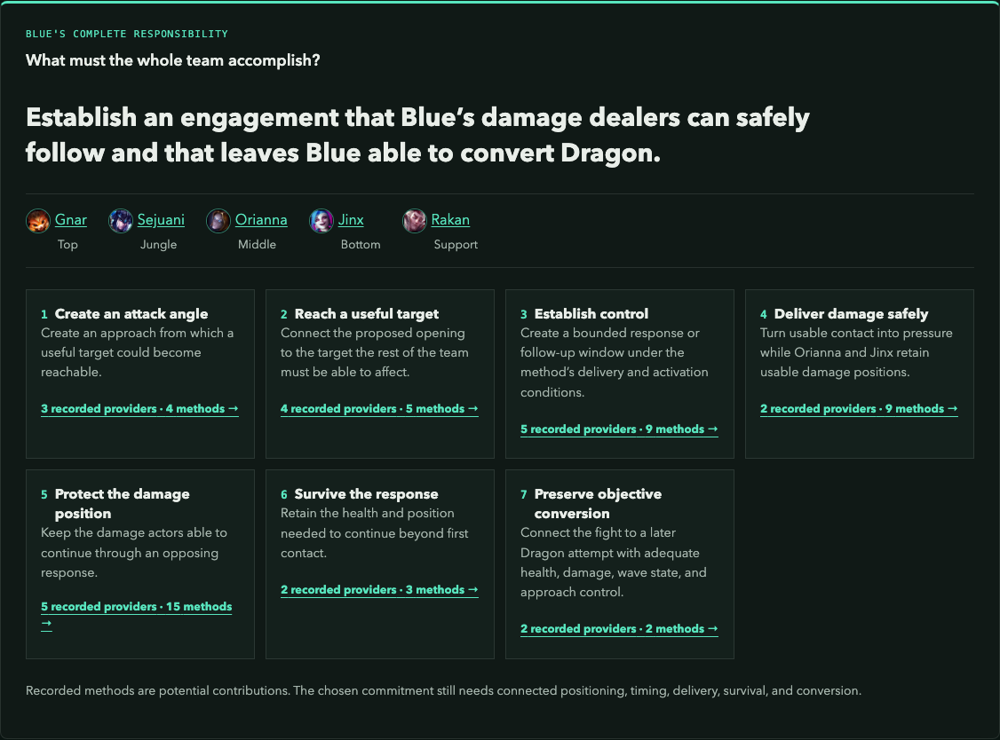
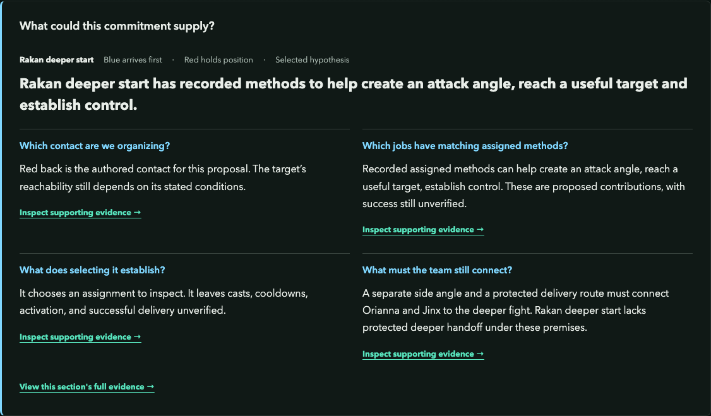
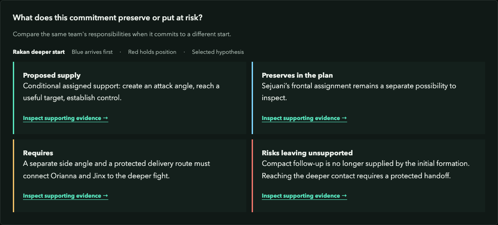
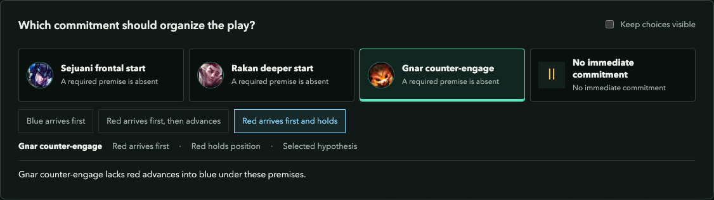

Blue has Gnar, Sejuani, and Rakan near Dragon. Each can start a fight, and a flank looks tempting. Which opening can the whole team finish? This article shows how to check access, safe follow-up, and conversion before treating an engage as usable. The lineup is Gnar Top, Sejuani Jungle, Orianna Mid, Jinx ADC, and Rakan Support. Its tools give Blue several candidate starts. Each needs conditions that bring the damage dealers into the same fight.
Here, an anchor is the commitment that organizes the remaining work: who follows, who protects the damage position, and what must remain possible after contact. This tactical reading complements the composition-level question of which champions supply those jobs.
The screenshots below preserve the earlier commitment experiment as a worked example. That interactive experiment has been retired. Its captures record authored assumptions and the model at capture time; the maps illustrate the situation.
Several starts. One team to bring into the fight.
Read the positions as an authored setup. The following panels inspect what each opening asks of the remaining teammates.
This illustrated setup places Blue’s damage dealers near controlled space. Sejuani has a frontal option; Rakan sees a deeper angle. Use the scene to ask which responsibilities and conditions each opening would require.
- A target near the front
Sejuani’s candidate start reaches the exposed enemy near Blue’s controlled approach.
- A tempting deeper target
Rakan may reach the back position. The next question is whether the team can join that contact.
- The same two damage dealers
Keep Orianna and Jinx in view. Compare the ground they would need to cross for each opening.
- ○ Blue
- × Red
- ⇢ Intended movement
- ··· Effect relationship
- ◌ Intended control
Authored situation on the labs’ shared Season 2024 schematic. Positions and control areas illustrate the argument; exact ranges, timing, vision, and outcomes require game-state evidence. Hover or follow a numbered marker for context. Terrain reference ↗
Trace a Complete Engagement
Assume Blue arrives first, controls the objective entrance, and has the health and cooldowns needed to contest. Red exposes a target within Sejuani's reach. Orianna and Jinx are already close enough to follow from controlled space.
Trace the attempt: Sejuani reaches the target, her control creates a damage window, and Orianna and Jinx attack without crossing an enemy-controlled choke. Blue must then survive the response and retain enough health, position, and wave control to take Dragon.
Those are scenario assumptions to verify in preparation. If the target survives the initial control and Red can immediately reach Jinx, the proposed sequence has a gap. The first successful action establishes only the first part of the route.
Trace the frontal opening through follow-up
Keep the starting formation fixed and inspect Sejuani’s proposal.
Sejuani’s intended first contact is reachable from the illustrated controlled approach. Orianna and Jinx contribute from behind her. Delivery, survival, and Dragon conversion still require the stated conditions.
- Start within a connected formation
Sejuani’s proposal puts first contact near the damage dealers’ illustrated position. Their ability to act still needs checking.
- Deliver the follow-up
Orianna and Jinx need to reach the same target during the opening while preserving a usable damage position.
- Keep conversion possible
Blue must retain the health, position, and entrance control needed to convert after the opposing response.
- ○ Blue
- × Red
- ⇢ Intended movement
- ··· Effect relationship
- ◌ Intended control
Authored situation on the labs’ shared Season 2024 schematic. Positions and control areas illustrate the argument; exact ranges, timing, vision, and outcomes require game-state evidence. Hover or follow a numbered marker for context. Terrain reference ↗
Keep the complete responsibility in view
{kind=link}

Open full-size image ↗The original experiment followed the team’s work from access through conversion. This saved view inspects the frontal proposal with Blue arriving first.
Saved from the retired commitment experiment. This historical view reflects its authored premises and model at capture time. The controls pictured here are part of the image.
Check the conditions required at every transition in this authored sequence.
- Create angle
- Cross threat space
- Reach target
- Apply control
- Allies follow
- Hold constraint
- Convert
Compare the Opening With Its Follow-Up
Rakan also has an apparent side angle. In this example, however, following him would require Orianna and Jinx to cross exposed ground. His entry could land while Blue's damage remains stranded. Under these authored conditions, Sejuani's frontal start is the proposal to inspect first. Its appeal comes from the connected sequence: reachable target, protected follow-up, and a plausible objective conversion. Keep Rakan's resources available for the ensuing fight.
Gnar's available form, angle, and terrain also belong in this comparison. Count an opening only after placing every required teammate and checking the timing. The diagram's sequence provides the same test for any initiator.
A deeper contact changes the follow-up problem
Inspect Rakan’s deeper target with the same starting positions. The longer follow-up now runs through ground Red can contest.
A deeper contact gives Orianna and Jinx a different access and protection requirement. This illustration motivates a dependency to investigate; the composition evaluator does not calculate this movement or its outcome.
- The first action could land
Rakan’s intended entry reaches the deeper enemy. That tests a different contact point from Sejuani’s frontal start.
- The missing safe handoff
The damage dealers would have to cross this contested approach. Red’s front still stands between them and the deeper fight.
- Judge the complete sequence
The original frontline target keeps follow-up connected under this setup. The deeper target needs a different access premise.
- ○ Blue
- × Red
- ⇢ Intended movement
- ··· Effect relationship
- ◌ Intended control
Authored situation on the labs’ shared Season 2024 schematic. Positions and control areas illustrate the argument; exact ranges, timing, vision, and outcomes require game-state evidence. Hover or follow a numbered marker for context. Terrain reference ↗
Inspect the commitment behind the opening
{kind=link}

Open full-size image ↗Rakan’s deeper proposal has a side angle in this example. The saved assessment leaves the damage dealers’ exposed follow-up as a problem to resolve.
Saved from the retired commitment experiment. This historical view reflects its authored premises and model at capture time. The controls pictured here are part of the image.
Read what the assignment preserves and leaves unsupported
{kind=link}

Open full-size image ↗The saved tradeoff view keeps the same Rakan proposal and exposed follow-up premise. Preserved assignments describe the proposed plan; they leave actual ability availability open.
Saved from the retired commitment experiment. This historical view reflects its authored premises and model at capture time. The controls pictured here are part of the image.
{kind=link}
Reconsider the Start When Red Arrives First
Now give Red first access and control of the approaches. Blue's safe frontal follow-up disappears. A Rakan flank becomes usable only if a separate side angle and a safe route for the damage dealers remain available; assume Red denies both here.
If Red advances into Blue's established defensive formation, counter-engage becomes a candidate. Gnar and Orianna can punish that commitment while the team keeps Jinx's attack space protected. Check the same conditions through survival and conversion before committing.
If Red stays at range, that counter-engage opening never arrives. Blue may need to reposition or concede the contest. The three-start diagram distinguishes the conditions each plan requires; it gives no guarantee that any route is currently open.
Red gets to decide whether to enter
Two alternative branches with the same Blue defensive formation. Only the advance supplies an opposing commitment for Blue to answer.
Red’s front enters the illustrated defensive formation. Gnar and Orianna become possible responses if their methods are ready and the team can continue through survival and conversion.
- An opposing commitment supplies the trigger
Red has entered Blue’s illustrated formation. This creates a candidate response to inspect, with timing and delivery still unresolved.
- Continue protecting the damage
Gnar’s form, Orianna’s action, the damage window, and the later conversion all still need to be usable together.
Blue has a defensive formation, but Red stays outside it. The required counter-engage opening is absent in this branch. Blue can reposition or reconsider the contest.
- Red refuses the entry
Holding outside the formation leaves Blue without the opponent commitment its proposed counter-engage requires.
- Preserve the damage position
Keeping Jinx protected preserves an assignment. It does not create a target or establish that Blue can take Dragon.
- ○ Blue
- × Red
- ⇢ Intended movement
- ··· Effect relationship
- ◌ Intended control
Authored situation on the labs’ shared Season 2024 schematic. Positions and control areas illustrate the argument; exact ranges, timing, vision, and outcomes require game-state evidence. Hover or follow a numbered marker for context. Terrain reference ↗
Reconsider a counter-engage when the opponent holds
{kind=link}

Open full-size image ↗In this saved branch Red arrives first, holds its position, and denies the side angle. Gnar’s counter-engage proposal still needs an opposing commitment to answer.
Saved from the retired commitment experiment. This historical view reflects its authored premises and model at capture time. The controls pictured here are part of the image.
A candidate becomes worth inspecting when its required conditions can be established.
- Candidate opening
- Frontal initiation
- Controlled approach
- Flank
- Side angle and safe follow-up
- Counter-engage
- Opponent commits into the formation
- Frontal initiation
Check the Whole Engage
- What complete responsibility are we committing to?
- What does the proposed opening supply?
- Which jobs must teammates still perform?
- Which conditions connect the opening to follow-up and conversion?
- What does this assignment preserve or leave unsupported?
- Which changed premise should make us reconsider?
For the strategic version, read Three Initiators. How Many Plans Does Your Team Actually Have? It uses the current Team composition experiment to compare recorded responsibilities and a Rakan-to-Lulu replacement.